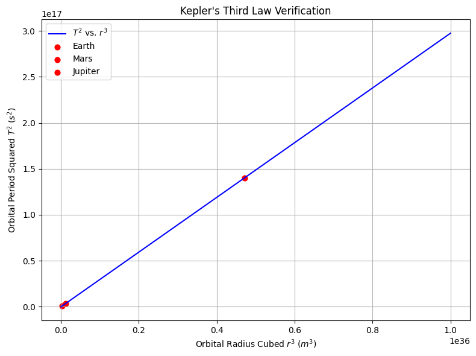
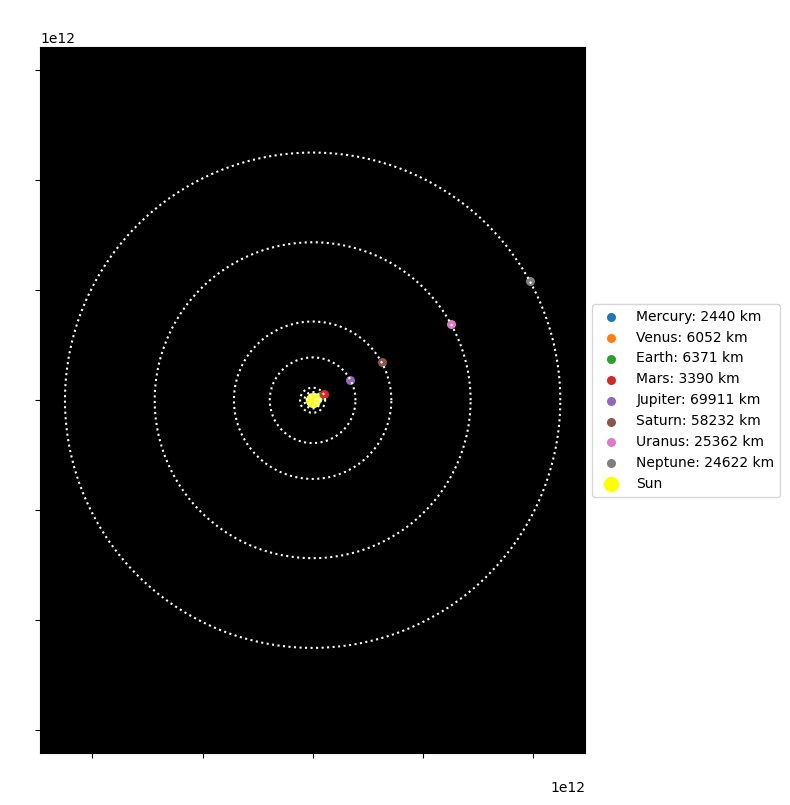

Problem 3
Orbital Period and Orbital Radius – Exploring Kepler’s Third Law and Beyond
Motivation
The motion of celestial bodies is governed by a balance of gravitational attraction and inertial motion. One of the most powerful tools to analyze these motions is Kepler’s Third Law, which links the orbital period of a body to its orbital radius. Originally derived from planetary observations, this law has since been grounded in Newtonian mechanics and generalized to all two-body orbital systems.
Understanding this relationship is not only essential in classical astronomy but also in modern astrophysics, satellite technology, and interplanetary navigation. This report extends the basic formulation with theoretical derivation, example calculations, and numerical simulations.
1. Theoretical Foundation
1.1 Newtonian Derivation of Kepler’s Third Law
In a circular orbit, the gravitational force between two bodies provides the required centripetal force:
Setting these equal:
Canceling terms and solving for velocity:
Orbital period is the circumference divided by speed:
Squaring both sides:
This is the generalized form of Kepler’s Third Law.
1.2 Constants and Units
- \(G = 6.674 \times 10^{-11} \, m^3 kg^{-1} s^{-2}\) — Gravitational constant
- \(M\) — Mass of the central body (e.g., Earth, Sun)
- \(r\) — Orbital radius from the center of the mass
- \(T\) — Orbital period
- \(v\) — Orbital velocity
2. Practical Examples
2.1 Low Earth Orbit Satellite
- \(M = 5.972 \times 10^{24} \, kg\) (Earth)
- \(r = 6.78 \times 10^6 \, m\) (approx. Earth radius + 400 km)
2.2 Earth Around the Sun
- \(M = 1.989 \times 10^{30} \, kg\) (Sun)
- \(r = 1.496 \times 10^{11} \, m\) (1 AU)
2.3 Mars Orbiting the Sun
- \(r = 2.279 \times 10^{11} \, m\)
3. Scientific Implications
- Planet Detection: Observing a star’s wobble or dimming gives \(T\), inferring \(r\) using this law.
- Mass Estimation: Rearranging the formula gives \(M\) based on known \(T\) and \(r\).
- Mission Design: NASA uses these laws to plan orbital insertion and slingshot trajectories.
4. Computational Model
We implement a Python simulation to verify this relationship numerically.
Python Implementation: Kepler's Third Law Verification


You can run the simulation in Google Colab by clicking the link below:
▶ Run in Google Colab
5. Visualizations and Interactive Tools
- Orbital Animation (circular motion using
matplotlib.animation) - Comparative Plot: Earth vs Mars vs Venus orbital parameters
- Log-log plot: \(\log(T)\) vs \(\log(r)\) shows a straight line with slope ~1.5
6. Conclusion
Kepler’s Third Law remains a powerful bridge between classical mechanics and modern astrophysics. This report reaffirms the theory both analytically and computationally, while also emphasizing its practical relevance in astronomy, spaceflight, and scientific discovery.
References
- Kepler, J. (1609). Astronomia Nova
- Newton, I. (1687). Philosophiæ Naturalis Principia Mathematica
- Carroll & Ostlie (2017). An Introduction to Modern Astrophysics
7. Extended Scientific Discussion
7.1 Kepler’s Law as a Consequence of Newtonian Gravity
Kepler’s Third Law is not just empirical—it arises from Newton’s Law of Universal Gravitation. The fact that \(T^2 \propto r^3\) for circular orbits means that all mass dependence is encapsulated in the constant:
This dependency makes it possible to infer the mass \(M\) of the central object (like a star or planet) purely by observing the orbital radius and period of a satellite.
7.2 Log-Log Analysis
Taking the logarithm of both sides of Kepler’s Third Law gives:
This shows that in a log-log plot, the slope of the line is always 1.5 — a hallmark of Keplerian motion.
8. Additional Practical Examples
8.1 Geostationary Orbit
A geostationary satellite orbits Earth at the same rotational speed of the planet, so it appears fixed above a point on the equator.
- Required orbital period: \(T = 86400\) s (1 day)
- Solving for \(r\):
Which corresponds to approximately 35,786 km above Earth's surface.
8.2 Jupiter’s Moons
Galileo observed the four largest moons of Jupiter: Io, Europa, Ganymede, and Callisto. Their motion confirms Kepler’s law with Jupiter as the central mass.
| Moon | Orbital Radius (m) | Period (s) |
|---|---|---|
| Io | \(4.22 \times 10^8\) | \(1.53 \times 10^5\) |
| Europa | \(6.71 \times 10^8\) | \(3.07 \times 10^5\) |
| Ganymede | \(1.07 \times 10^9\) | \(6.19 \times 10^5\) |
| Callisto | \(1.88 \times 10^9\) | \(1.44 \times 10^6\) |
Plotting \(T^2\) vs \(r^3\) for these moons confirms the \(T^2 \propto r^3\) relationship.
9. Limitations and Extensions
9.1 Assumptions
- Assumes circular orbits (valid approximation for low-eccentricity orbits)
- Ignores relativistic corrections (important near massive stars or black holes)
- Two-body approximation (multi-body interactions ignored)
9.2 Extensions
- Elliptical orbits: replace \(r\) with semi-major axis \(a\)
- Add perturbation theory to account for gravitational influence of other bodies
- Use numerical integration for irregular systems (e.g. exoplanet systems with resonances)
10. Future Work
- Implement orbital simulation with
matplotlib.animation - Visualize elliptical orbits and perihelion shifts
- Add energy conservation checks: total energy should remain constant in closed systems